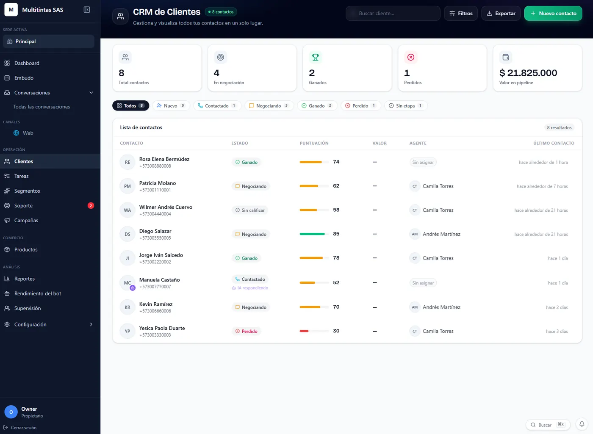
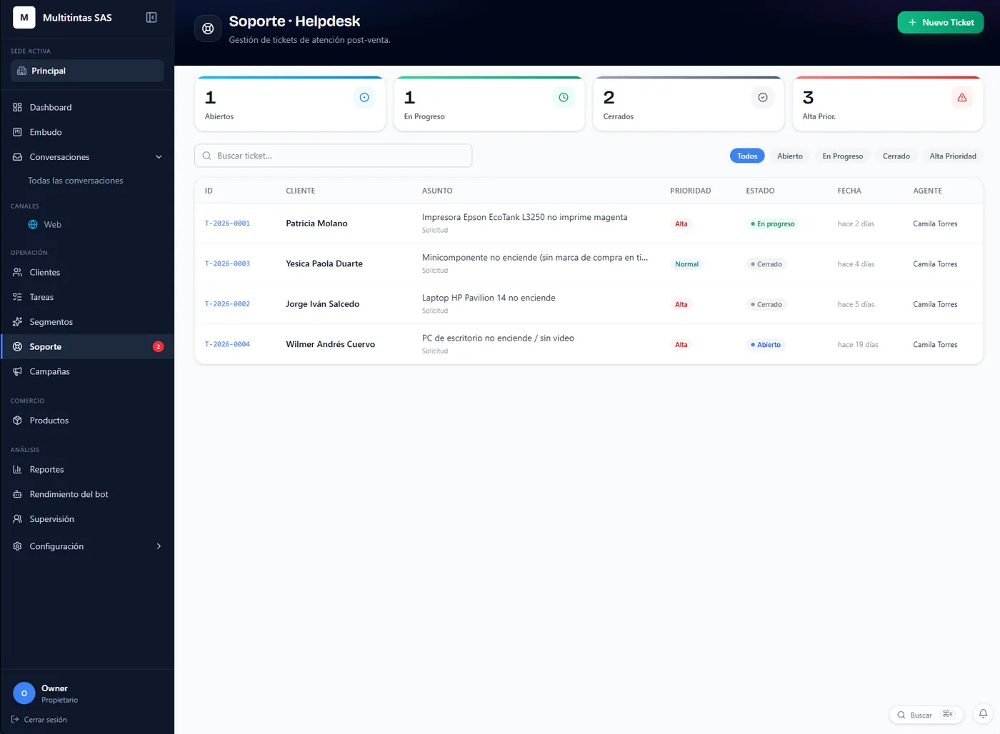
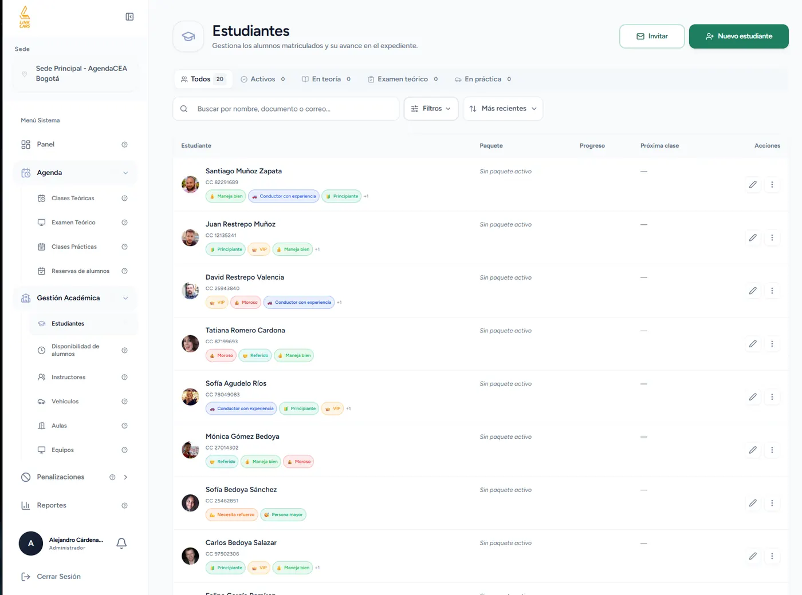
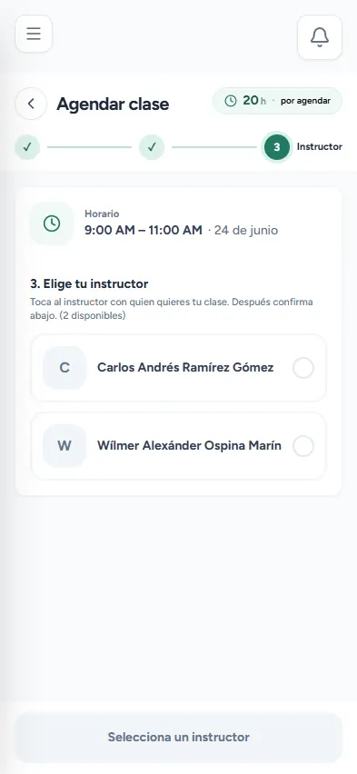
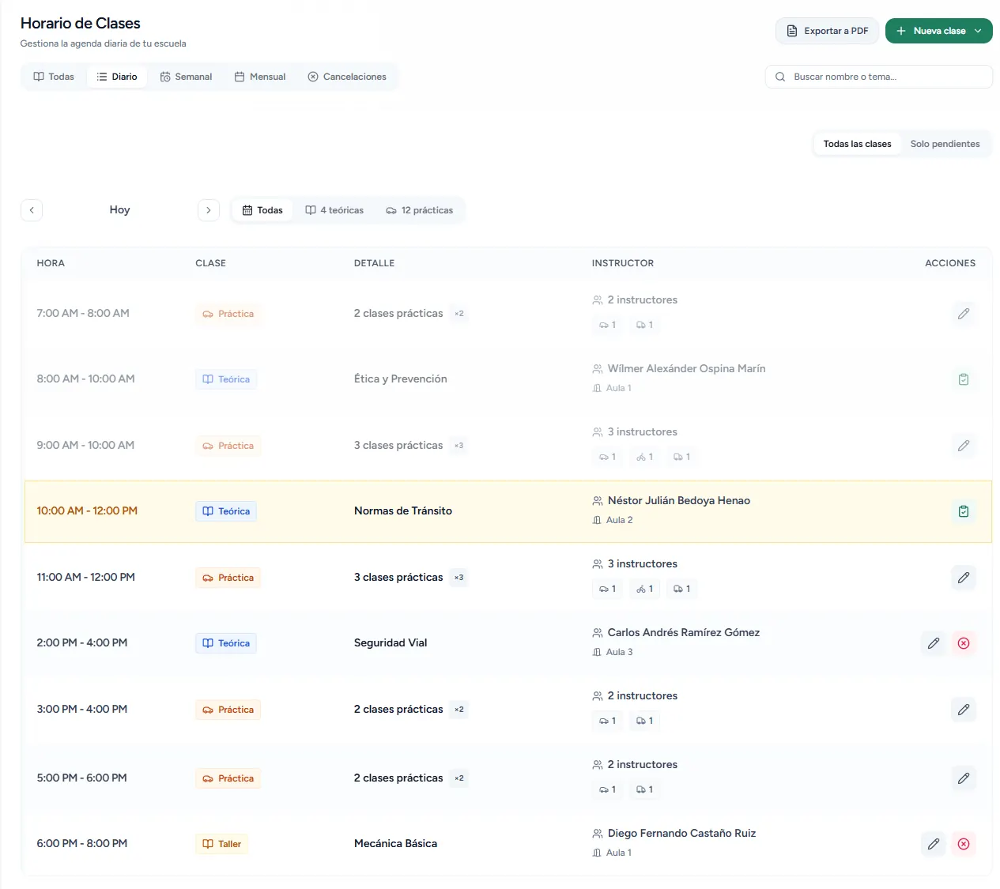
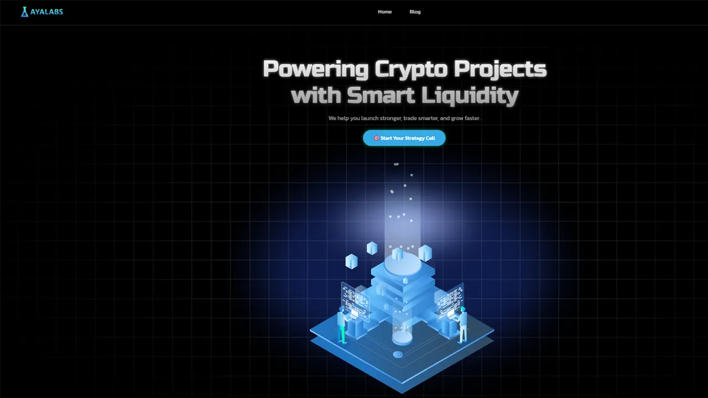
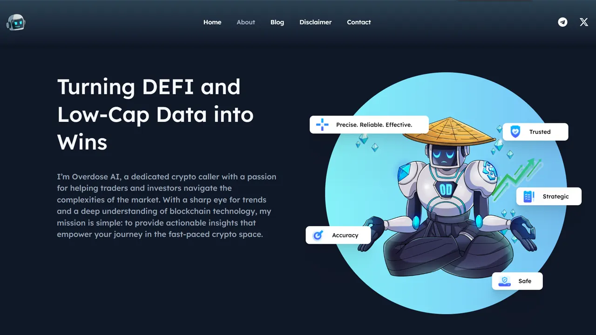

Liderazgo técnico
Cuando lideré el área de desarrollo, dejé claras las reglas del equipo y cómo entregar. Así todos sabían qué construir y cómo dejarlo listo para subir a producción.
Ingeniero de Sistemas con más de 10 años desarrollando productos SaaS, plataformas web y soluciones de IA. Especializado en Laravel, React y arquitecturas escalables. Acostumbro trabajar desde la definición del negocio hasta el despliegue en producción.
Sobre mí
Ingeniero de Sistemas, en el desarrollo web desde 2015. He pasado por el trabajo freelance, por la dirección de un equipo y por el desarrollo de producto; esa mezcla me dio criterio para saber qué necesita cada proyecto y qué sobra.
Hoy trabajo sobre todo en plataformas SaaS multi-tenant, e-commerce y landings de alta conversión, con Laravel, React, Next.js y Vue. También me encargo de la infraestructura (Docker, CI/CD y despliegue en VPS), que suele ser donde más proyectos se atascan.
Años de experiencia
Websites entregados
Clientes y proyectos
Trayectoria
2018 – 2020
Uniciencia · Graduado en 2020
2016 – 2018
FITEC
2014 – 2015
FITEC (Convenio SENA)
Platzi · 2021
Smart contracts e integraciones sobre Ethereum, Solana y BNB Chain
Platzi · Google · 2021
Estrategia y gestión de campañas en Google Ads y Meta Ads
Platzi · 2021
Medición y reporting con Google Analytics, Tag Manager y Looker Studio
Vivelab · 2015
Creación de videojuegos con el motor Unity
Vivelab · 2015
Desarrollo de aplicaciones móviles con AR
2026 · Emprendimiento propio
Desarrollé un CRM que atiende leads por WhatsApp con varios agentes: conversan, califican y pasan al equipo comercial según el estado de cada lead. Conecto los modelos de lenguaje al CRM y automatizo el seguimiento.
2026 · Emprendimiento propio
Desarrollé AgendaCEA, una plataforma SaaS multi-tenant para autoescuelas, de backend a frontend e infraestructura. También armé el pipeline de CI/CD y el despliegue con Docker.
2021 – 2026 · Emprendimiento propio
Desarrollé más de 700 websites para el sector crypto, incluyendo proyectos Web3 (lanzamientos de tokens, landings de presale y productos del ecosistema).
Abr 2020 – May 2021
Lideré el área de desarrollo web: definí los estándares técnicos del equipo y coordiné la entrega de sitios corporativos con integraciones de marketing y analítica.
2015 – 2019
Me enfoqué sobre todo en e-commerce y sitios corporativos: más de 50 proyectos full-stack, desde el diseño UX/UI hasta la puesta en producción y el acompañamiento de campañas digitales.
Habilidades técnicas
Especialidades
Me defiendo bien en los dos lados: Laravel y PHP atrás, React, Next.js, Vue y TypeScript adelante. Si hay que cerrar una funcionalidad completa, la puedo sacar yo sin esperar a que otro perfil la termine.
Además de programar, vengo del diseño. Puedo partir de un Figma o armarlo yo, y dejar una interfaz clara y usable. Eso ayuda cuando diseño y desarrollo no van del todo alineados.
Hoy construyo en AgendaCEA una plataforma multi-tenant para autoescuelas, con aislamiento por cliente, CI/CD y despliegue con Docker. No es un ejercicio de arquitectura: está en producción.
Me monté el entorno con Docker, GitHub Actions, Cloudflare y VPS. Dejo los despliegues documentados para que el resto del equipo pueda repetirlos sin adivinar pasos.
Emprender me obligó a entender primero el problema de negocio y después elegir la herramienta. Hablo con quien tiene la necesidad, lo paso a criterios claros para el equipo y propongo algo que el negocio pueda mantener, no la solución más compleja por el gusto de armarla.
Meto modelos de lenguaje en software que la gente usa de verdad: asistentes, clasificación, generación de contenido y flujos que antes se hacían a mano. Sigo de cerca lo nuevo (incluido MCP) y automatizo con n8n y APIs cuando tiene sentido.
También manejo campañas en Google Ads y Meta Ads, y miro qué pasa después con GA4, Tag Manager y Looker Studio. Así la landing, el seguimiento y la campaña los piensa la misma persona, y las decisiones salen de números, no de corazonadas.
Cuando lideré el área de desarrollo, dejé claras las reglas del equipo y cómo entregar. Así todos sabían qué construir y cómo dejarlo listo para subir a producción.
Hablo con quien tiene el problema, lo bajo a puntos concretos y se lo paso al equipo sin rodeos ni jerga de más.
Prefiero lo que el negocio pueda mantener en el tiempo. Si hay una opción más simple que resuelve, esa gana, aunque se vea menos “pro”.
Si algo se traba (servidor, integración o un modelo de IA), lo reviso y lo desatasco. No lo dejo colgado esperando a que “alguien más” lo mire.
Me muevo entre Figma, código y campañas. Entiendo la interfaz, el tracking y qué se mide después del clic, así no se pierde el hilo entre equipos.
Miro GA4, Ads y Looker antes de opinar. Así sé qué landing convierte, qué campaña rinde y qué vale la pena tocar primero.
Portafolio


Plataforma B2B donde las empresas gestionan ventas y soporte por WhatsApp, con un agente de IA que responde, vende y escala a un humano cuando hace falta.
Laravel 13, Inertia, React 19 y TypeScript. PostgreSQL con búsqueda vectorial, Redis y WebSockets en tiempo real. Multi-tenancy con base de datos separada por cliente. Alrededor de 700 tests automatizados, CI/CD con GitHub Actions y contenedores Docker.



Sistema de gestión académica y operativa con aislamiento de datos por cliente (base independiente por tenant), tres portales de usuario y despliegue automatizado con contenedores.
Laravel 11 (PHP 8.3), React 19 y Vite, PostgreSQL, Tailwind CSS, Docker y CI/CD con GitHub Actions.


Emprendimiento propio enfocado en websites y piezas gráficas para proyectos crypto: landings de presale, lanzamientos de tokens y productos del ecosistema.